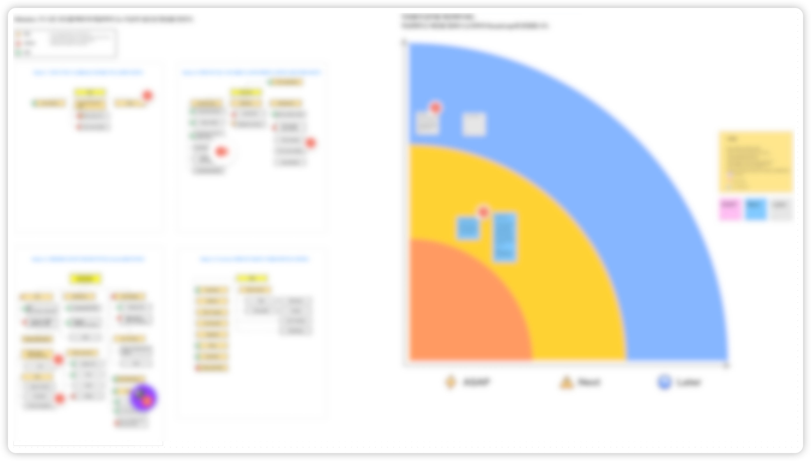
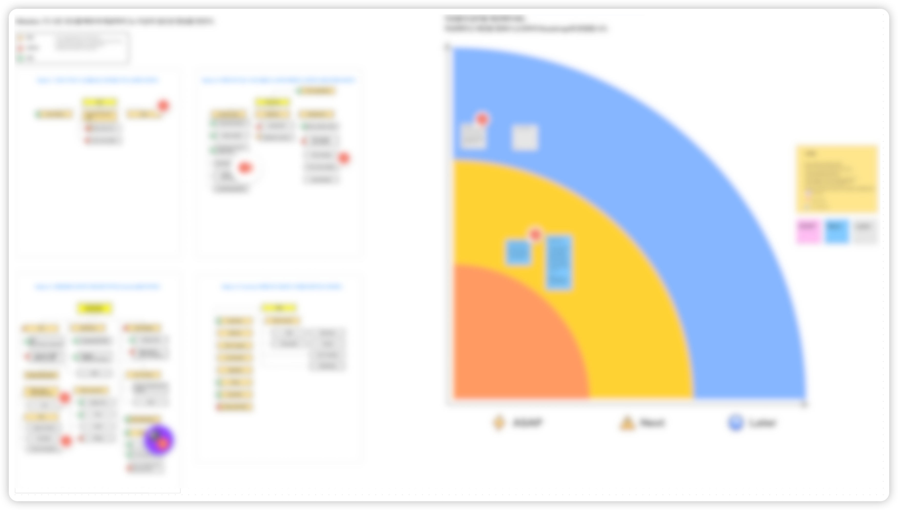

테크리드 1년 회고
이 글은 처음으로 테크리드가 되고 나서의 고민과 경험을 공유하고자 쓰게 되었습니다.
어느 날 테크리드가 되었습니다

제가 테크리드가 된 것은 의외의 일이었습니다. 저는 4년의 짧은 개발 경력을 가지고 있었고 아직 부족한 점이 많다고 생각해왔기 때문입니다. 다른 개발자보다 잘하는 몇 가지 장점이 있다면 다른 팀이나 다른 역할의 사람과 소통 하는데 어려움이 없었다는 점입니다. 그리고 팀 전체의 생산성을 높이는 데 신경쓰고 성과를 높이려 노력해왔습니다.
이 날 저는 매니저를 찾아가 물었습니다.
나: 제가 아직 테크리드가 될 수 있는 자격을 갖췄는지 잘 모르겠습니다. 저보다 더 적절한 사람이 맡는 것이 좋을것 같습니다.
매니저: 이미 그 역할을 해주고 계세요. 너무 어렵게 생각하실 필요없어요. 다른 웹 엔지니어 구성원분들의 레퍼런스가 되어주세요.
위 말을 듣고 부담이 커졌지만 주어진 기회를 잘 활용하고 싶었습니다. 테크리드가 어떤 책임을 가져야 하는지 공부하기 시작했습니다.
테크리드란 어떤 책임을 갖는가?
불현듯 테크리드를 맡기 몇 달전, 다른 엔지니어 동료에게 선물받았던 개발 7년차, 매니저 1일차 라는 책이 떠올랐습니다. (그는 닥칠 미래를 알고 있었던 것일까요? 아니면 그저 우연일까요?)
이 책은 테크리드의 책임에 대해 자세히 설명하고 있습니다. 선물 받았을 당시, 매니저가 되려면 멀었다고 생각했기에 주의깊게 본 책은 아니었습니다. 이번 계기로 다시 책을 펼쳐보게 되었습니다.
대개 테크리드는 가장 복잡한 기술을 다루고 최고의 코드를 작성하는 개발자에게 맡겨야 한다고 생각한다.
(...)
이는 경험 많은 매니저조차 흔히 빠지는 일반적인 오해다. 테크리드의 역할을 팀에서 가장 경험이 많거나 실력 있는 개발자로 연결지어 생각하는 것은 잘못된 생각이다.
(...)
테크리드는 팀 전체의 성장을 위해 기술 프로젝트 리더로 활동하면서, 대규모 프로젝트에서 자신의 전문성을 살려 팀에 기여한다. - 개발 7년차, 매니저 1일차
정리하면 테크리드는 개발 업무의 계획을 세우고 함께하는 구성원이 프로젝트를 효율적으로 마무리 지을 수 돕습니다.
무엇을 해야하는가?
팀이 어디를 향해 가고 있는 지 모른다면 길을 잃거나 중요하지 않는 것에 매달릴 수 있습니다. 또한, 같은 목표를 보고 있지 않으면 서로의 의견이 다를 때 답을 찾지 못할 수 있습니다.
저는 로드맵을 만들고 다음 할 일이 무엇이고 현재 어떤 성과들을 만들어왔는지, 우선순위는 어떠한지 주기적으로 확인할 수 있었습니다. 서로의 업무 공유와 우선순위를 정하는데 드는 시간이 줄어들었습니다.
 

하지만 기술 로드맵을 세우는 일은 쉽지 않았습니다. 기술을 우선하면 비즈니스 요구 사항을 놓치고, 비즈니스만 좇으면 기술 부채가 쌓이게 됩니다. 단기 성과와 장기적인 개발 속도 사이에서 균형을 잡는 일은 의식적으로 시간을 들여 관리해야하는 영역이라는 것을 배웠습니다.
1년이 지난 지금, 이대로 괜찮은가?
문제가 생기면 직접 해결하려 했었고 꽤 오랫동안 그래왔습니다. 왜냐하면 이 방법이 쉽고 빠른 해결 방법이라고 생각했기 때문입니다. 그리고 이렇게 하는 것이 구성원들을 더 배려 하는 것이라 생각했습니다.
하지만 시간이 지날 수록 문제가 드러났습니다.
- 제 일정에 따라 해결이 지연되었고
- 번아웃에 가까운 상태가 되었으며
- 무엇보다 팀원들이 제 결과물을 온전히 이해하기 어려워했습니다
당장의 문제는 사라졌지만, 팀의 문제 해결 역량은 크게 자라지 않았습니다.
위임의 중요성
누군가가 만든 길을 가고 싶나요? 아니면 내가 만든 또는 함께 만든 길을 가고 싶나요? 대부분은 누군가가 만든 길만 따라가고 싶지 않을겁니다. 이는 팀의 기술적 방향성을 정할 때도 마찬가지입니다.
함께 방향성을 논의하고 작은 단위로 나누어 위임했어야 한다는 것을 깨달았습니다. 그렇지 않으면 구성원들은 참여를 이끌어내기 어려울 뿐만 아니라 문제 해결 경험을 쌓을 수 없습니다.
심리적 안정감을 주는 팀
심리적 안정감이란 실패와 도전을 숨기지 않고 말할 수 있는 상태를 말합니다.
성공 경험은 쉽게 공유되지만, 실패 경험은 그렇지 않습니다. 부족함을 드러내는 일처럼 느껴지기 때문입니다.
하지만 실패 경험이 공유되지 않으면 팀은 성장하기 어렵습니다. 같은 실패를 또 다른 누군가 겪을 수 있고 그 경험을 발판삼아 성장할 수 있는 기회를 잃어버립니다.
실패를 드러내는 행동이 능력 부족이 아니라 신뢰의 표현이 되도록 방향을 만들어야 했습니다.
말뿐인 리더십은 잔소리일 뿐
“실패를 공유하자”고 말하는 것만으로는 부족했습니다.
운동을 전혀 하지 않는 사람이
“운동 열심히 해야 한다”고 말한다면
그 말은 잔소리로 들릴 수밖에 없습니다.
그래서 저는 먼저 제 실패를 공유했습니다.
- 제가 놓친 판단
- 그로 인해 발생한 장애
- 재발 방지를 위해 무엇을 바꿨는지
솔직히 말하면, 꽤 부끄러웠습니다.
하지만 그 경험을 공유하며 팀과 함께 성장하고 싶다는 의지를 표현했을 때
팀은 비난보다 지지와 격려로 반응했습니다.
그 순간 깨달았습니다.
앞장서서 행동하는 리더십이
말보다 훨씬 강력하다는 것을.
요약
테크리드로서 1년을 보내며 깨달은 가장 큰 점은, 팀의 레퍼런스가 되는 결과를 꾸준히 만들어내는 일과 팀의 성장을 위해 계속 배우는 자세가 필수라는 것이었습니다.
단기적인 문제 해결보다, 팀원들과 충분히 소통하고 기술적 방향성을 함께 고민하며 더 잘 위임하는 데 집중하려 합니다.
또한 리더십은 말로 설명하는 역할이 아니라, 먼저 행동으로 보여주는 역할이라는 것도 배웠습니다. 실패를 공유하자고 말하기 전에 스스로 실패를 드러내고, 도전을 권하기 전에 먼저 시도하는 사람이 되어야 팀에 신뢰와 심리적 안정감을 만들 수 있었습니다.
이전에는 개인으로서 얼마나 기여했는지를 고민했다면, 이제는 그와 동시에 팀이 얼마나 성장했는지를 함께 바라보게 되었습니다. 쉽지 않은 역할이지만, 그만큼 더 큰 보람과 배움을 주는 자리라고 느끼고 있습니다.